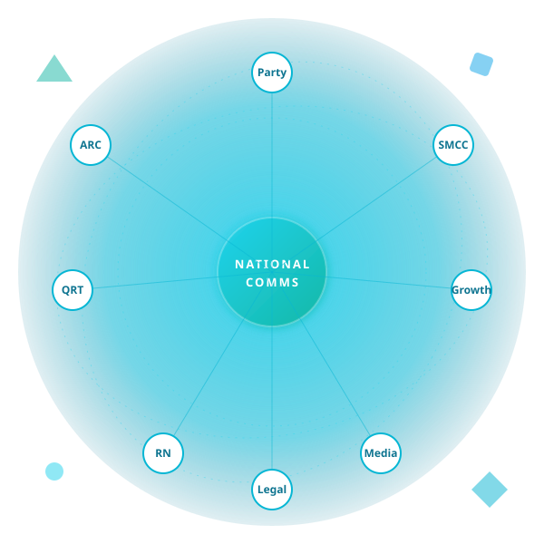
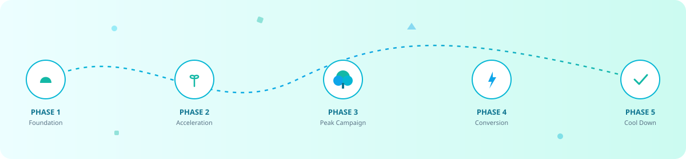

Sixteen specialised teams. One mission. Explore how Varahe Analytics' communications stack — from narrative and reporter networks to SMCC and growth — fits together across every campaign phase.

Click any node to drill into that team. The centre is the Communications spine — every spoke is a specialised arm.
Five phases shape every state engagement. Intensity rises and falls; teams cycle in and out. Hover or tap each phase to feel the curve.

Hover a node to highlight every team it works with — narrative flows, approval chains and dependencies surface in one view.
SMCC, ARC, MCC, MCMC — the lexicon of campaigns. Every term used across the site auto-resolves to a tooltip; this is the master list.